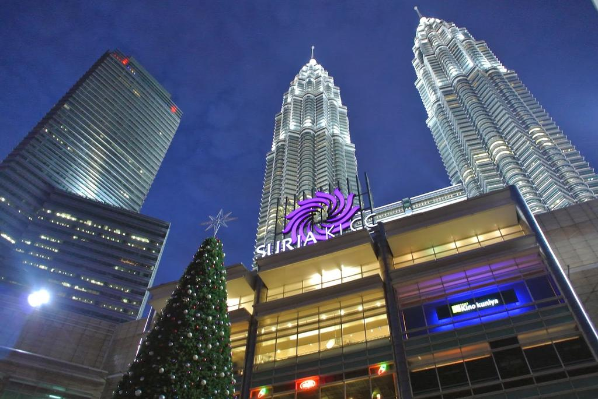

Shopping
Suria KLCC

Located at the base of the 88-storey, steel-clad Petronas Twin Towers (which rise to 451.9m), the crescent-shaped Suria KLCC is more than just a shopping and dining venture. Opened in 1999, the retail and entertainment complex on the junction of Jalan Ampang and Jalan P. Ramlee houses a plethora of interesting attractions.